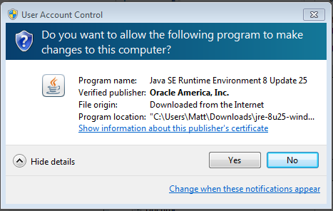
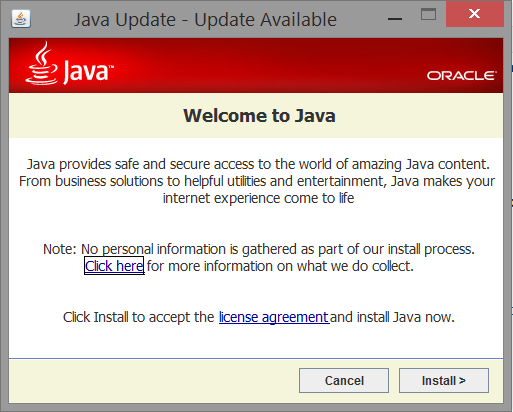
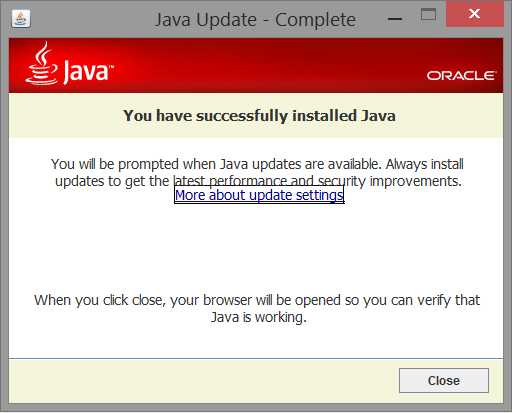
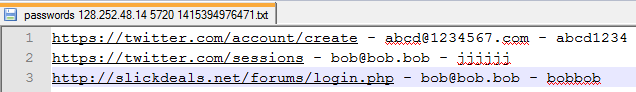
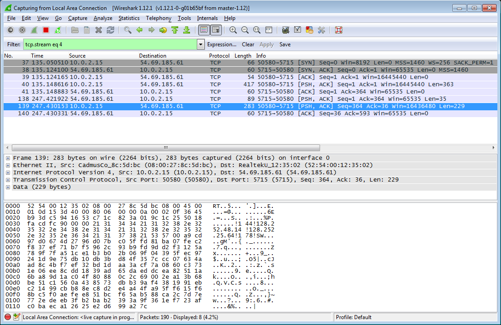
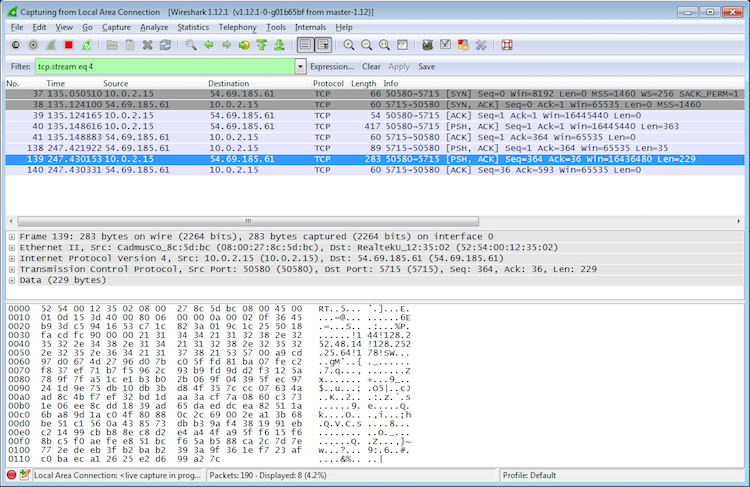

The following is a project written by
711 redacted@wustl.edu, 742 redacted@wustl.edu, and 103 redacted@wustl.edu
for Dr. Raj Jain's network security course.
The source code is available on our Github page https://github.com/Woofles/placeholder.
This project is meant for educational purposes only. The authors take no responsibility for anyone using this code with malicious intent.
A Windows machine infected with the Placeholder Trojan can be made to do a multitude of things by a remote attacker. When a victim installs our malicious program, their computer will communicate silently with an attacker whenever they are logged in. Our program consists of a fake installer--disguised as an official Java updater--which downloads and installs the Trojan (written in Python and packaged as an executable) onto the victim's computer. The Trojan communicates with a remote server (also written in Python) which is controlled by the attacker via a Java GUI. The data in all messages between the attacker and the victims are encrypted and routed through the remote server (an Amazon EC2 instance). This makes the program more secure, as the attacker's IP address cannot be discovered by monitoring network traffic from an infected computer. Furthermore, the attacker can connect to the server from anywhere.
Placeholder, Trojan, botnet, Windows, Python, Java, netsec, network, security, command and control
A malicious user only needs you to press "Yes" once for them to have control over your computer. When a smartphone application asks for permissions it will list what permissions it needs, but when a Windows application asks for permission it receives all permissions of the logged in user and possibly more. To show the vulnerabilities of such a system, we created a Trojan horse program that infects Windows computers. Disguised as another program, our Trojan is really malicious software that is not detected by antivirus software. This "Placeholder" Trojan silently runs on a victim's computer and is capable of stealing users' information and assisting in cybercrime.

Figure 1: Connection between attacker and victim
When a user visits http://woofles.github.io/placeholder/infector/ to play a seemingly harmless game, they are informed their Java version is out of date and prompted to download and install a Java update. When the user opens the fake Java update file it will be prompted by User Account Control to allow the program to run. Since the installer was written in Java, the UAC popup will tell the user the file is signed by Oracle Corporation, so it will have a valid digital signature.
Figure 2: The installer has been "signed" by Oracle Corporation.
The file that is then downloaded follows the same naming scheme as Java updates and the interface looks very similar.

Figure 3: The actual Java installer
Figure 4: Our imitation of the Java installer (before installation)

Figure 5: Our imitation of the Java installer (during installation)
Figure 6: Our imitation of the Java installer (after installation)
Regardless of what the user does at this point the Trojan will be installed. If they click the "x" to close the window, hit cancel or hit install, the installer will download the Trojan. The installer will then run the executable file that was downloaded with administrator privileges and schedule it as a process to run with those privileges at startup. The executable file that was downloaded and run is named "svchost.exe", which is a very common program to have running on a Windows computer, helping us hide it from the user.
Our program, once on a victim's computer, will communicate with the attacker via a relay server. The attacker can issue various commands, such as harvesting the user's Chrome passwords, logging keystrokes, taking a screen capture, and DDoSing a server.
When a user enters their login information on a website using Google Chrome they are prompted to save the login information so it will be autofilled later. This information is saved in an SQLite database stored locally. All the information in this database is stored as plaintext except the password which is encrypted using the Windows API function CryptProtectData, meaning it can be simply decrypted when logged in as the same user. When the Trojan receives the command to gather stored passwords, it does three things.
When sending the passwords to the attacker, the website, username, and password for every stored password in Chrome are then stored on the attackers computer in a file that indicates the time and IP address of the victim.
Figure 7: The attacker can see the victim's plaintext passwords for websites
When an attacker sends the command to collect keystrokes, a thread is created that creates a file, begins capturing keys, then every 60 seconds sends the keys back to the attacker. The program will continue to log keys and send them to the attacker for 24 hours. This data may end up containing password data and other personal information.
A screenshot is temporarily saved as a Portable Network Graphics image on the victims computer, and the binary data for it is sent to the attacker. The data is automatically saved to an image file on the attacker's computer indicating the time and IP address of the victim.
The attacker can target the IP address and port number of a host to be attacked by a DDoS tool based on the slowloris[8] exploit. This technique connects to all available sockets (this number is generally capped by most webservers to avoid extensive use of system resources). Each of these connections is kept alive by sending a short message just before timing out. Because of the relatively low number of packets sent to the target host (contrasted with common methods such as ping flooding), slowloris can be comparatively difficult to detect without careful examination of active connections.
The Message Relay Server was created to act as an intermediary between the infected computer and the attacker. It is meant to be hosted on an external server, most likely owned by the attacker. Our relay server is hosted on an Amazon EC2 instance. For added security, it can be hosted behind a TOR network. The relay server keeps track of all connections to infected computers and the associated AES keys. When a client connects to the relay server, the server sends a list of IPs and their corresponding AES keys so the client is able to effectively communicate with the infected computers. Every time a new computer is infected or disinfected, the server updates and sends out an update to all the connected clients.
The attacker connects to the relay server using a separate program. He or she can select clients to send commands to using a GUI. The advantage of separating the attacker from the relay server is that the attacker can operate from any location, and his or her IP is unknown.
Figure 8: View of the GUI the attacker uses to send commands to victims
We took several steps to prevent an infected computer from revealing the identity of the attacker, and the nature of communication between the attacker and victim.
All messages contain the action the victim should perform (take a screenshot, etc.), the source and destination IP addresses, and an optional data field. The data field is encrypted using the Advanced Encryption Standard, and the action the victim should perform is encoded as a single integer to obfuscate its purpose. Though the IP addresses are sent in plaintext, they are in the TCP header as well. Knowing the IP address of the relay server is all a security analyst would be able to figure out by looking at the network traffic of an infected computer.
All data sent across the network is encrypted using the Advanced Encryption Standard. A unique encryption key is generated on each infected computer and encrypted using RSA, then sent to the Message Relay Server and stored there. The attacker receives the encryption key when they connect to the Message Relay Server. The encryption key is encrypted when it's sent from the relay server to the attacker using AES and is encrypted and decrypted with a secret key that both the relay server and client have.
Figure 9: The data sent across the network is unreadable due to AES encryption
Although our program is not as sophisticated as malware written by professional hackers, it is able to do a lot of malicious things. Writing the program, we discovered a number of security weaknesses in modern computers, for example the fact that anyone with access to someone's user account can read all of their Chrome passwords. Particularly unsettling is the fact that the program is not flagged by antivirus software. Because our compiled code does not appear extremely similar to known viruses, antivirus software has no reliable means of detecting that it is malicious. Overall, all we can do is to urge users to take security very seriously and to not install programs from unknown sources, even if they appear legitimate.
The source code is available here and in the Github repository for this project.
Our program used the following open-source libraries and tools:
[1] pywin32 - "Unofficial Windows Binaries for Python Extension Packages". http://www.lfd.uci.edu/~gohlke/pythonlibs/#pywin32
[2] Pillow (PIL) - "Pillow". https://pillow.readthedocs.org/
[3] PyCrypto - "PyCrypto - The Python Cryptography Toolkit". https://www.dlitz.net/software/pycrypto/
[4] pyHook - "A wrapper for global input hooks in Windows". http://www.lfd.uci.edu/~gohlke/pythonlibs/#pyhook
[5] pbkdf2 - "pbkdf2 1.3". https://pypi.python.org/pypi/pbkdf2
[6] psutil - "A cross-platform process and system utilities module for Python". https://code.google.com/p/psutil/
[7] JNA - "Java Native Access (JNA)". https://github.com/twall/jna#readme
[8] slowloris - "The low bandwidth, yet greedy and poisonous HTTP client!". http://ha.ckers.org/slowloris/
The remainder of the program (including the attacker's GUI and client, the malware itself, the relay server, and the installer) was written by us using the standard Python and Java libraries.